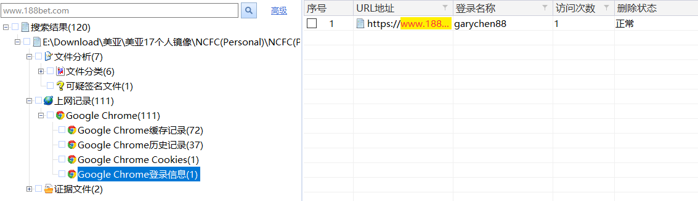
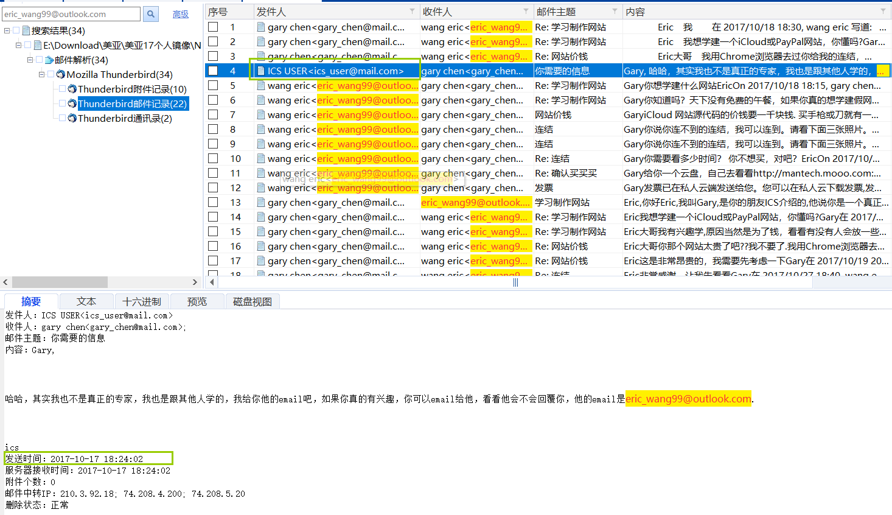
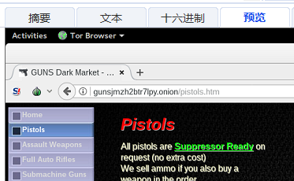
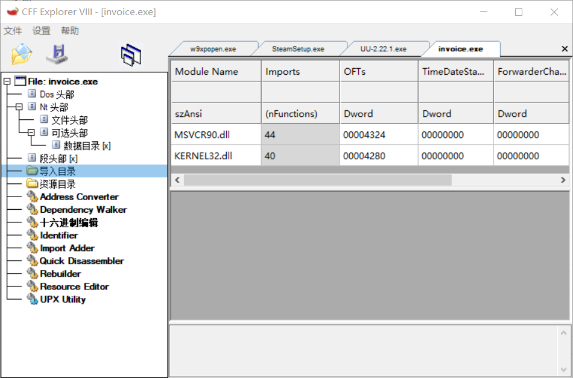

2017年第三届美亚杯电子取证-个人赛WP
2017年第三届美亚杯电子取证-个人赛
案件背景
Gary是一位经常用手提电脑的人，而且热爱足球运动，常常看足球网站。他于2007年9月开始想赚快钱，思想变得偏激，并关注一些违法的事。于是Gary就想着赌博，查阅军事资料，了解恐怖袭击的新闻报道。另外他开始上网寻找有关如何购买枪械、刀等武器的资料，还寻找如何制造假网站，但最后均无收获。
检材：
.e01镜像
工具软件：
取证大师V6.1.67374RTM（FMP）
1：求镜像的MD5哈希值
| 1 | Gary的笔记本电脑已成功取证并制作成镜像 (Forensic Image)，下列哪个是其MD5哈希值。 |
|---|---|
| A. | 0CFB3A0BB016165F1BDEB87EE9F710C9 |
| B. | 5F1BDEB87EE9F710C90CFB3A0BB01616 |
| C. | A0BB016160CFB3A0BB0161661670CFB3 |
| D. | 16160CFB3A0BB016166A0BB016166167 |
| E. | FB3A0BB016165 B016166 A0DF7FJE2EJ0 |
证据文件-》选中镜像-》摘要-》查看md5值

2：求硬盘分区
| 2 | 根据此镜像 (Forensic Image)，里面有多少个硬盘分区？ |
|---|---|
| A. | 1 |
| B. | 2 |
| C. | 3 |
| D. | 4 |
| E. | 5 |
C盘 D盘 E盘
3：开始逻辑区块地址（LBA）
| 3 | 你能找到硬盘操作系统分区内的开始逻辑区块地址（LBA）？ |
|---|---|
| A. | 0 |
| B. | 512 |
| C. | 2,048 |
| D. | 206,848 |
| E. | 102,402,047 |
其中，C盘的设备描述为系统保留；D盘E盘为本地磁盘。
结合磁盘内容，找到D盘的物理位置105,906,176
因为”现今计算机上所谓一个逻辑区块通常是512或1024位组“
将105,906,176/512=206，848
物理扇区，在winhex中就是$boot就是DBR
4：硬盘操作系统分区的大小
| 4 | 你能找到硬盘操作系统分区的大小吗 (字节byte)？ |
|---|---|
| A. | 48.7 |
| B. | 102,195,200 |
| C. | 140,232,703 |
| D. | 19,369,295,872 |
| E. | 52,323,942,400 |
48.73*1024*1024*1024=52,323,439,083.52
5：$MFT的物理起始偏移位置
| 5 | 在包含操作系统的分区内，$MFT的物理起始偏移位置是什么？ |
|---|---|
| A. | 3328 |
| B. | 4,170,040 |
| C. | 6,026,176 |
| D. | 6,498,304 |
| E. | 16,949,352 |
正常情况MFT以元文件的形式存储在相应磁盘分区的根目录中，但是是隐藏的。FMP可以直接访问到该文件。
3,327,131,648/512=6,498,304
6：操作系统的安装日期
| 6 | 请找出系统文件“SOFTWARE＂，请问操作系统的安装日期是？ （答案格式 －“世界协调时间＂：YYYY-MM-DD HH:MM UTC） |
|---|---|
| A. | 2017-09-04 10:10 UTC |
| B. | 2017-09-04 10:11 UTC |
| C. | 2017-09-04 10:12 UTC |
| D. | 2017-09-04 10:13 UTC |
| E. | 2017-09-14 02:14 UTC |
取证结果-》系统痕迹-》系统信息-》安装时间
2017-09-04 18:11:10
调整了时区后得到答案B
此处除了常识性的“-8”之外，遇到时区问题可以在此处验证调整
7：SID
SID为用户标识 （Security Identifiers）标识用户、组和计算机帐户的唯一的号码。
| 7 | 用户“Gary＂的SID是什么？ |
|---|---|
| A. | 1000 |
| B. | 1001 |
| C. | 1002 |
| D. | 1005 |
| E. | 1007 |
8：做法同上
| 8 | 用户“彼得＂的SID是什么？ |
|---|---|
| A. | 1000 |
| B. | 1001 |
| C. | 1002 |
| D. | 1005 |
| E. | 1007 |
9：操作系统
| 9 | 硬盘的操作系统是什么？ |
|---|---|
| A. | Windows 7 |
| B. | Windows 8 |
| C. | Windows 10 |
| D. | Linux Red Hat 7.1 |
| E. | MAC OS X |
10：查看默认浏览器
| 10 | 哪个是Windows的默认浏览器？ |
|---|---|
| A. | Microsoft Internet Explorer |
| B. | Google Chrome |
| C. | Mozilla Firefox |
| D. | Opera |
| E. | QQ 浏览器 |
取证后看到只有IE、Chrome和火狐，
根据常识可知IE为默认浏览器
11：辨别URL
| 11 | 用户 “Gary＂曾经浏览过一些非法博彩网站，下列哪项URL符合？ |
|---|---|
| a. | www.10086.com |
| b. | www.188bet.com |
| c. | www.hv5858.com |
| d. | www.12377.cn |
| e. | www.88.bettingwell.com |
| f. | www.aaakk.org |
| A. | 只有(a) & (b) |
| B. | (a), (b), (d) & (f) |
| C. | (b), (c), (d) & (f) |
| D. | (b), (c), (e) & (f) |
| E. | 以上皆是 |
通过实时搜索，
a:
无此记录
b:
根据标题判断为非法博彩网站
c:
d:
中国互联网举报中心
e:
在线博彩公司
f:
无此结果
PS：此处f项的结果笔者存在疑义，但结合选项选D
12：登入名称
| 12 | 用户Gary曾经登入上述非法博彩网站，下列哪个是其登入名称？ |
|---|---|
| A. | ggchey68 |
| B. | gany-cher88 |
| C. | galy_chen88 |
| D. | garychen1688 |
| E. | garychen88 |
结合第11题，发现上网记录的登陆信息里

13：邮箱
| 13 | 在所有用户中，用于电子邮件发送/接收的程序名称是什么？ |
|---|---|
| A. | 新浪邮箱 |
| B. | 网易163 |
| C. | 阿里邮箱 |
| D. | Foxmail |
| E. | Mozilla Mail – ThunderBird |
取证结果-》邮件解析
14：USB使用痕迹
| 14 | 在该Windows系统中，曾经连接数个USB移动储存装置 (U盘)，下列那个不是 该系统连接过的USB移动储存装置 ? | |
|---|---|---|
| A. | WD My Passport 0827 USB Device | |
| B. | StoreJet Transcend USB Device | |
| C. | Samsung Portable SSD USB Device | |
| D. | StoreJet TS256GESD400K USB Device | |
| E. | General UDisk USB Device |
取证结果-》USB设备使用痕迹
15：做法同上
| 15 | 在该Windows系统中，下列哪个USB移动储存装置 (U盘)曾被指派为‘Z’磁盘分区代号(Drive Letter) ? |
|---|---|
| A. | WD My Passport 0827 USB Device |
| B. | StoreJet Transcend USB Device |
| C. | Samsung Portable SSD USB Device |
| D. | StoreJet TS256GESD400K USB Device |
| E. | General UDisk USB Device |
16：最后关机时间
| 16 | 该Windows系统中，下列哪个是最后的关机时间? |
|---|---|
| A. | 2017-10-31 4:52:54 UTC |
| B. | 2017-10-31 4:53:54 UTC |
| C. | 2017-10-31 4:54:54 UTC |
| D. | 2017-10-31 4:55:54 UTC |
| E. | 2017-10-31 4:56:54 UTC |
其中取证结果-》系统痕迹-》系统开关机时间
中也能看到关机时间，但与本题不符。为什么会出现这种情况呢？
本人认为，此处的逻辑顺序应为：
2017-10-31 11:53:38（正常）开机 |
17：电脑名称
| 17 | 该Windows系统中，下列哪个是电脑名称? |
|---|---|
| A. | GARYPC |
| B. | GARY-PC |
| C. | GARY_PC |
| D. | GARY |
| E. | GARY-NB |
18：邮箱账号
| 18 | 在该Windows系统中，下列哪个是用户Gary日常使用的邮箱帐号? |
|---|---|
| A. | ics_user@mail.com |
| B. | ics_user@gmail.com |
| C. | gary@mail.com |
| D. | gary_chen@mail.com |
| E. | gary_chen@gmail.com |
19：邮件记录
| 19 | 在该Windows系统中，用户Gary曾经收过一封来自邮箱帐号 ics_user@mail.com 的邮件，内容提及有关制作钓鱼网站及邮件帐号eric_wang99@outlook.com，下列哪个是此封邮件的发送日期和时间? |
|---|---|
| A. | 2017-09-25 17:07:15 |
| B. | 2017-10-17 14:35:45 |
| C. | 2017-10-17 18:24:02 |
| D. | 2017-10-26 19:17:08 |
| E. | 2017-10-26 19:24:57 |
实时搜索【eric_wang99@outlook.com】
查看邮件记录

20：同19题
| 20 | 在该Windows系统中，用户Gary还曾经收过两封来自邮箱帐号 eric_wang99@outlook.com的邮件，标题为“学习制作网站”，下列哪个是第一封邮件的发送日期和时间? |
|---|---|
| A. | 2017-09-25 17:07:15 |
| B. | 2017-10-17 14:35:45 |
| C. | 2017-10-17 18:24:02 |
| D. | 2017-10-18 18:30:45 |
| E. | 2017-10-18 19:38:05 |
这里有一个逻辑拐点，【下列】之前是前情提要，之后是问题。
认真读题后意思是：
第一封\来自 eric_wang99@outlook.com的发送日期和时间是？
而摘要中的时间则表明
2017-10-18 18:15 gary编辑 |
21：同19题
| 21 | 在该Windows系统中，用户Gary还曾经收过两封来自邮箱帐号 eric_wang99@outlook.com邮件，标题为“学习制作网站”，下列哪个是第二封电邮的发送日期和时间? |
|---|---|
| A. | 2017-09-25 17:07:15 |
| B. | 2017-10-17 14:35:45 |
| C. | 2017-10-17 18:24:02 |
| D. | 2017-10-18 18:30:45 |
| E. | 2017-10-18 19:38:05 |
22：同19题
| 22 | 用戶Gary亦曾經收過一封來自電郵帳號 ics_user@mail.com 的電郵，附加了兩張與咖啡豆有關的相片，下列那個是此封電郵之發送日期及時間? |
|---|---|
| A. | 2017-09-25 17:07:15 |
| B. | 2017-10-17 14:35:45 |
| C. | 2017-10-17 18:24:02 |
| D. | 2017-10-26 19:17:08 |
| E. | 2017-10-26 19:24:57 |
23：导出附件，查看MD5
| 23 | 下列那項是與上述咖啡豆有關相片的MD5哈希值/哈希值(Hash value)? |
|---|---|
| A. | 449cebf0eb96499df047fe0bff8e1627 |
| B. | 17f9c6bcca44d128f7ed6769a6920278 |
| C. | 4bc48ce355acd4732f33a79e29728e96 |
| D. | 4bc48ce355acd4732f33a79e29728e97 |
| E. | e3e545c80a7273b7b0d7c73dacdd7227 |
找到题目中的两张图
右键导出
>certutil -hashfile 202141514292669coffee-beans2.jpg MD5 |
24：同23题
| 24 | 在该Windows系统中，用户Gary还曾经收到一封来自邮箱帐号 eric_wang99@outlook.com 的邮件，附加有三张与Apple iCloud相关的相片，下列哪个为该封邮件的发送日期和时间? |
|---|---|
| A. | 2017-09-25 17:07:15 |
| B. | 2017-10-17 14:35:45 |
| C. | 2017-10-17 18:24:02 |
| D. | 2017-10-18 18:30:45 |
| E. | 2017-10-18 19:38:05 |
25：连接WIFI
| 25 | Gary经常使用笔记本电脑浏览互联网，他的笔记本电脑上曾经连接过多少WIFI热点？ |
|---|---|
| A. | 1 |
| B. | 2 |
| C. | 3 |
| D. | 4 |
| E. | 5 |
26：全局唯一识别元（Globally Unique Identifier, GUID）
| 26 | 上述电脑曾经连接过星巴克WIFI热点，下列哪项是其全局唯一识别元（Globally Unique Identifier, GUID）？ |
|---|---|
| A. | {8039D237-A346-4BA1-9B78-5752580ED7F0} |
| B. | {39489FA0-DE35-4989-8730-E2E2ED15E85A} |
| C. | {558B94DF-8D68-4779-AA25-65FBDAB4C2B9} |
| D. | {4EFCDA7E-CE51-4EC2-8980-8629647C9968} |
| E. | {AF0778E8-6C4F-41C6-84B2-CB14490CF29E} |
用于指示产品的唯一性安装。在许多流行软件应用程序（例如 Web 浏览器和媒体播放器）中，都使用 GUID 网络GUID、网卡GUID
27：IP地址
| 27 | 有关Gary的笔记本电脑，下列哪项是其最后分派得到的IP地址？ |
|---|---|
| A. | 192.168.0.1 |
| B. | 192.168.10.4 |
| C. | 192.168.20.6 |
| D. | 192.168.30.3 |
| E. | 192.168.40.5 |
28：查看URL
| 28 | Eric曾发邮件给Gary，内容是关于如何在暗网(Dark Web)中浏览枪械的信息，以下哪个URL是由Eric提供的? |
|---|---|
| A. | http://hhnovpxmqrw5xaqg.onion |
| B. | http://gunsjmzh2btr7lpy.onion |
| C. | http://gunsdtk58tolcrre.onion |
| D. | http://armoryohajjhou6m.onion |
| E. | http://armory45jijdf7d.onion |
邮件记录没东西，查看附件
在【好东西.docx】里看到四个Deep web weapons Store Links
涉及
http://hhnovpxmqrw4xaqg.onion/
http://armoryohajjhou5m.onion/
http://gunsjmzh2btr7lpy.onion/
http://gunsdtk47tolcrre.onion/
无法分辨
查看其他图片附件

29：简单信息分析
| 29 | Eric 售卖iCloud 网站给Gary 的价钱是多少? |
|---|---|
| A. | $500 |
| B. | $800 |
| C. | $1000 |
| D. | $1400 |
| E. | $1500 |
找到Eric发给Gary的文件，关键词出现在邮件主题“网站价钱”
30：识别常用软件
| 30 | Gary 经常将非法文件存储到该笔记本电脑的加密分区中，下列哪一个为该加密软件? |
|---|---|
| A. | TrueCrypt |
| B. | VeraCrypt |
| C. | Bitlocker |
| D. | LUKS |
| E. | PGP WDE |
选项中提到的所有软件都为加密软件，
系统痕迹-》安装软件-》其他软件
发现B选项

31：同23题
| 31 | 在加密磁区内有三张与Apple iCloud有关的相片，下列哪个为其中一张相片的MD5哈希值(Hash Value)? |
|---|---|
| A. | c9fbfaf3c45492c40feb83a83217f146 |
| B. | 14903a7bd9d709b653f9afe8e3e51cdd |
| C. | 7cb0f29812317db645edbcd6cf46e1ba |
| D. | 5503d096bdf832460c8f51da62fbbb5d |
| E. | 9918465b62171ba2c0a95595db629bf3 |
>certutil -hashfile 202141514292583icloud1.png MD5 |
32：同23题
| 32 | 在加密磁区内有三张与暗网(Dark Web)有关的相片，下列哪个为其中一张相片的MD5哈希值(Hash Value)? |
|---|---|
| A. | 2836d35fb45c591211d5b6865c4a82f5 |
| B. | d2b14799050b6c4ad6b07cd1227b91a5 |
| C. | 9110c96baa70c00acd8fbdfe2dc7c397 |
| D. | 703899985d881e2d103eb4fd1306be2e |
| E. | 4c57a45b8da5ea01e5eb7d875f94a7b8 |
>certutil -hashfile 202141514293877Screenshot 1.png MD5 |
33：计算机系统时区
| 33 | Gary的计算机系统时区是什么？? |
|---|---|
| A. | 中国标准时间 |
| B. | 日本标准时间 |
| C. | 泰国标准时间 |
| D. | 新加坡标准时间 |
| E. | 伦敦标准时间 |
34：简单信息分析
| 34 | 在上述加密磁区内，存有一个名为”2017-10-27”的文件夹，内有三张枪械的图片，该三张图片是来自哪个网站? |
|---|---|
| A. | http://gunsdtk58tolcrre.onion |
| B. | http://gunsjmzh2btr7lpy.onion |
| C. | thegunstorelasvegas.com |
| D. | cabelas.com |
| E. | hyattgunstore.com |
实时搜索【2017-10-27】
发现用户痕迹中，最近访问的文档
路径对上了
E:\2017-10-27\Screenshot 1.png
锁定该图片
想起之前接触的同名文件出现在邮件附件中
参考28题
35：简单信息分析
| 35 | Gary的笔记本电脑曾经下载过多少张有关恐怖组织的图片? |
|---|---|
| A. | 1 |
| B. | 2 |
| C. | 3 |
| D. | 4 |
| E. | 5 |
根据经验常识，笔记本电脑的下载路径默认在C:\Users\用户名\Downloads
考虑到常用用户Gary
找到该文件夹
个人认为这道题极易出错，按照官方答案选择B，存在isis.jpg和isis2.jpg

但通过浏览发现其他两张图片，颇具恐怖组织色彩
不解
36：同19题
| 36 | 根据Gary与Eric邮件的内容，Eric曾经提供Gary一个私有云盘，下列哪项是该邮件提供的资料? |
|---|---|
| A. | 动物图 |
| B. | 枪的结构图 |
| C. | 博彩图 |
| D. | 博彩文件 |
| E. | 恐怖主义图 |
37：同19题
| 37 | 下列哪项是上述私有云盘的网址? |
|---|---|
| A. | http://mantech.mooo.cn |
| B. | http://mantech.mooo.com |
| C. | http://mooo.com |
| D. | http://mantech.com |
| E. | http://23.54.45.113 |
38：同19题
| 38 | 下列哪项是上述私有云盘网址的连接端口? |
|---|---|
| A. | TCP 80 |
| B. | TCP 8080 |
| C. | UDP 80 |
| D. | TCP 8000 |
| E. | TCP 443 |
39：查看上网痕迹
| 39 | 下列哪项是Gary第一次浏览该私有云盘网址时，所使用的浏览器? |
|---|---|
| A. | Microsoft Explorer |
| B. | Google Chrome |
| C. | Mozilla Firefox |
| D. | Opera |
| E. | QQ 浏览器 |
通过搜索云盘地址得到
40：同39题
| 40 | 下列哪项是Gary第一次浏览该私有云盘网址的日期和时间? |
|---|---|
| A. | 2017-10-29 12:42:09 |
| B. | 2017-10-30 12:42:09 |
| C. | 2017-10-31 12:42:09 |
| D. | 2017-10-30 10:42:09 |
| E. | 2017-10-30 11:42:09 |
最接近的为B选项
41：查看下载方式
| 41 | 在上述加密磁区内，存有一个名为”2017-10-30”的文件夹，里面有三张与枪械结构有关的图片，该三张图片是从哪个方法/软件下载? |
|---|---|
| A. | 邮件 |
| B. | Firefox |
| C. | Chrome |
| D. | USB thumb drive |
| E. | ftp |
42：查看下载时间
| 42 | Gary的笔记本电脑，曾经下载过一个感染了电脑病毒的文件，名为invoice.zip。该病毒程序文件是什么时候下载? |
|---|---|
| A. | 2017-10-31 12:26:20 |
| B. | 2017-10-31 12:50:34 |
| C. | 2017-10-31 12:29:55 |
| D. | 2017-10-31 10:52:10 |
| E. | 2017-10-31 12:18:54 |
43：最后存取日期/时间
| 43 | Gary的笔记本电脑，还存有一个感染了电脑病毒的程序文件，名为\User\Gary\Downloads\invoice\dist\invoice.exe。该文件的最后存取日期/时间(Last Accessed Data/Time) 是什么? |
|---|---|
| A. | 2017-10-31 12:26:27 |
| B. | 2017-10-31 12:50:34 |
| C. | 2017-10-31 12:29:55 |
| D. | 2017-10-31 10:52:10 |
| E. | 2017-10-31 12:18:54 |
这道题拐弯的点在于
通过实时搜索得到两条关于【invoice.exe】的记录
但题干其实把范围只限定在了Downloads里的那一个
关于他的最后存取时间为A
44：文件伪装
| 44 | 上述的invoice.exe文件伪装成什么格式的软件? |
|---|---|
| A. | |
| B. | jpg |
| C. | psd |
| D. | Docx |
| E. | Doc |
同样是上一题的环境，导出后依然是exe，看不出什么
丢进32位系统，得到
选择选项A

45：最后执行日期/时间
| 45 | 上述的\User\Gary\Downloads\invoice\dist\invoice.exe文件，最后执行日期/时间(Last Accessed Data/Time) 是什么? |
|---|---|
| A. | 2017-10-31 12:26:27 |
| B. | 2017-10-31 12:50:34 |
| C. | 2017-10-31 12:29:55 |
| D. | 2017-10-31 10:52:10 |
| E. | 2017-10-31 12:18:54 |
46：加密文件类型?
| 46 | 事实上，Gary的笔记本电脑被电脑病毒感染了，部份文件被加密，当中包括下列哪种文件类型? |
|---|---|
| a. | exe |
| b. | gif |
| c. | jpg |
| d. | psd |
| e. | Docx |
| f. | Doc |
| A. | 只有(a) & (b) |
| B. | (a), (b), (d) & (f) |
| C. | (b), (c), (d) & (f) |
| D. | (b), (c), (e) & (f) |
| E. | 以上皆是 |
47：执行次数
| 47 | 上述\User\Gary\Downloads\invoice\dist\invoice.exe文件共执行多少? |
|---|---|
| A. | 1 |
| B. | 2 |
| C. | 3 |
| D. | 4 |
| E. | 5 |
实时搜索-》用户痕迹-》最近访问记录-》最近程序访问记录

48：查看由什么程序编写
| 48 | 上述\User\Gary\Downloads\invoice\dist\invoice.exe文件是由什么程序编写? |
|---|---|
| A. | LISP |
| B. | C++ |
| C. | Visual Basic |
| D. | Python |
| E. | Java |
在查找【invoice.exe】无果后
exe本质上是压缩包
关键词查找【invoice】，发现invoice.zip
导出后查看
49：查找调用的动态连结函式库
| 49 | 上述\User\Gary\Downloads\invoice\dist\invoice.exe文件，执行时会呼叫下列哪个动态连结函式库(Dynamic Linked Library) |
|---|---|
| A. | KERNEL32.DLL |
| B. | USER32.DLL |
| C. | SHELL32.DLL |
| D. | NTDLL.DLL |
| E. | SYSTEM32.DLL |
询问了队里的RE大手子，得到一个工具CFF Explorer VIII
打开对应的文件夹，查看导入目录

选择选项A
但大手子强调，如果这道题是多选题的话，多半还需要加上D选项，因为ntdll模块主要是处理异常和查询一些进程重要信息，模块出现异常时调用几乎是必然。
50：同43题
| 50 | Gary的笔记本电脑，还存有另一感染了电脑病毒的程序文件，名为\tmp\invoice.exe。该文件的最后存取日期/时间(Last Accessed Data/Time) 是什么? |
|---|---|
| A. | 2017-10-31 12:26:27 |
| B. | 2017-10-31 12:50:34 |
| C. | 2017-10-31 12:29:55 |
| D. | 2017-10-31 10:52:10 |
| E. | 2017-10-31 12:18:54 |
51：文件之间的关系
| 51 | 上述两个文件\User\Gary\Downloads\invoice\dist\invoice.exe和 \tmp\invoice.exe是什么关系? |
|---|---|
| A. | 前者是后者的复本 |
| B. | 后者是前者的复本 |
| C. | 两者MD5不相同 |
| D. | 两者元数据(Metadata)相同 |
| E. | 两者无关系 |
52：查看上网痕迹
| 52 | 根据勒索讯息的显示，勒索网址是什么？ |
|---|---|
| A. | http://223.17.250.208:6000/C&C/ |
| B. | http://223.17.250.208/C&C/ |
| C. | http://223.17.250.208:6060/C&C/ |
| D. | http://223.17.250.208:80/C&C/ |
| E. | http://223.17.250.208:8080/C&C/ |
通过实时搜索，除了C选项，其他都没有相关结果
53：复杂信息分析
| 53 | 根据勒索讯息的显示，勒索金额是多少钱？ |
|---|---|
| A. | $1,000 |
| B. | $10,000 |
| C. | $20,000 |
| D. | $50,000 |
| E. | $100,000 |
上题的勒索网站打开失败，
应该是网站无人维护的问题。
一通搜索，在主用户的桌面
C:\Users\Gary\Desktop
发现screen.png
54：复杂信息分析
| 54 | 根据勒索讯息的显示，下列哪个是与勒索案件有关的比特币钱包？ |
|---|---|
| A. | 1KcjhpkowGWh5QYgPx5hYGuzbZpewgBszh |
| B. | 1KcjhpknwGWh5QYgPx5hYGuzbZpewgBszh |
| C. | 1KcjhpknwGWh5QYgPx5hYGuzbZpewgBzzh |
| D. | 1KcjhpknwGWh5QYgPx6hYGuzbZpewgBszh |
| E. | 1KcjhpknwGWh6QYgPx5hYGuzbZpewgBszh |
55：复杂信息分析
| 55 | 执法机关曾在现场对Gary的电脑进行电子法证检验，期间曾撷取与勒索软件相关的屏幕影像，并储存为png格式。下列哪项是其储存位置? |
|---|---|
| A. | \Users\彼得\Downloads\ |
| B. | \Users\彼得\Desktop\ |
| C. | \Users\Gary\Downloads\ |
| D. | \Users\Gary\Desktop |
| E. | \Users\Gary\Documents |